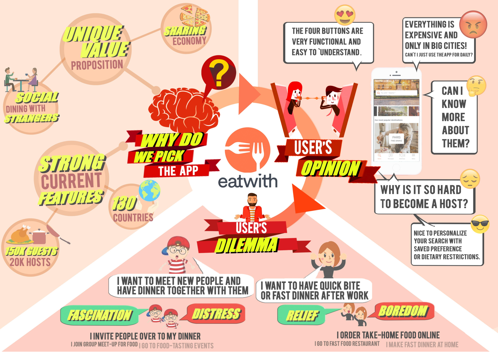
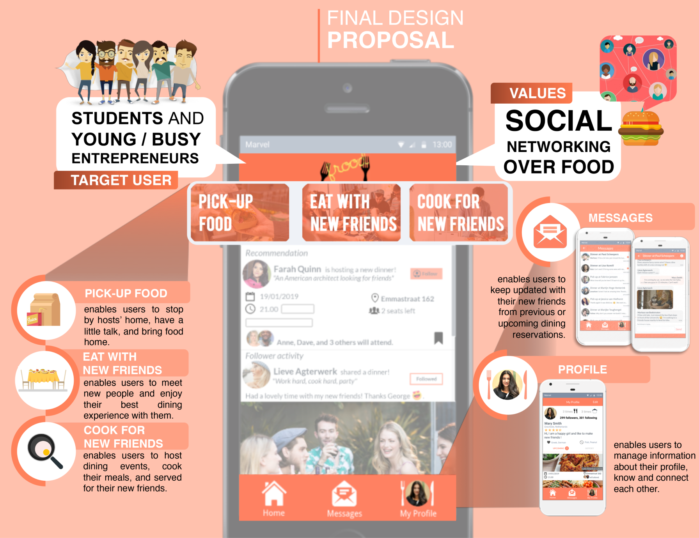

Frood - an eatwith redesign
Summary
As part of a group project, we redesigned EatWith to make it more inclusive and appealing to a broader audience. The assignment was for a class. We created mock-ups and user scenarios to explore usability challenges. I focused on translating research into design insights and applying usability principles throughout the process.
Context
EatWith is an app that connects tourists with hosts offering home-cooked meals. The original concept centered around unique dining experiences for travelers, but we saw potential to broaden its use. Our goal was to attract casual users—such as people who don’t want to cook after work but still value social dining.

Process
We started by evaluating the app based on the five pillars of usability: effective, efficient,
engaging, error-tolerant, and easy to learn.
We conducted emotion capture card interviews with the target audience to map
emotions and uncover friction points. A recurring dilemma emerged between exploration (meeting new people) and
management (seeking convenience).
We developed nine scenarios, including last-minute cancellations, meal
pickup vs. shared dining, flexible start times, and social features for following other users.
We designed the application so that it could handle all these different scenarios.

Results
We created a set of wireframes in MarvelApp. The designs emphasized flexibility and community while keeping usability clear.
Reflection
My main contribution was translating scenarios into design decisions, which taught me to bridge theory and practice. I also deepened my understanding of usability principles and how to apply them in real projects. The course helped deepen my knowledge about design principles and practices, eg by steering us towards the emotion capture cards and framework of dilemmas for designers. It helped broaden my horizon on methods I may not have used otherwise.